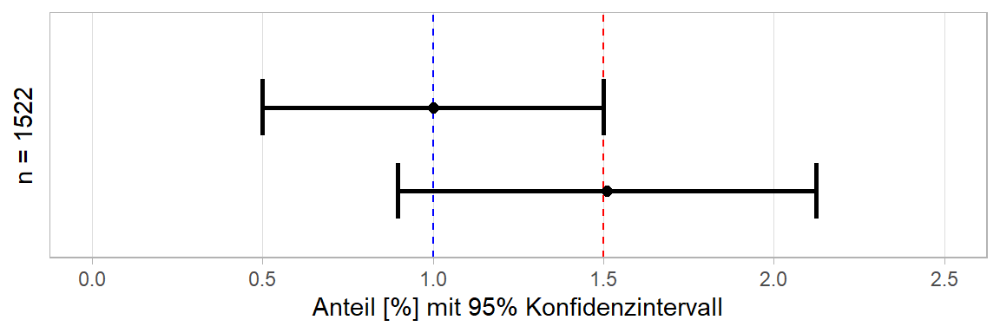
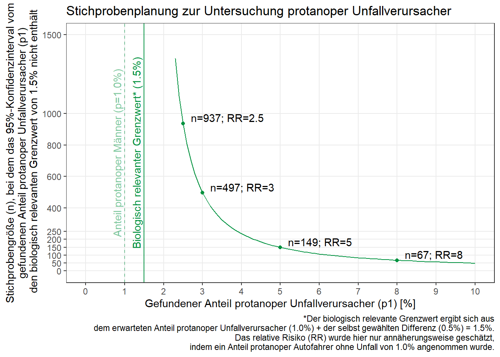

Stichprobenplanung
Fragestellung
Es ist bekannt, dass etwa 1% aller Männer rot-blind (protanop) sind. Es wird vermutet, dass protanope Autofahrer häufiger Auffahrunfälle verursachen als nicht-protanope Fahrer. Aus diesem Grund wird die vorerst etwas schwammige Frage formuliert:
Sollte protanopen Menschen das Autofahren untersagt werden, da sie mehr Unfälle verursachen?
Zielstellung
Wenn protanope Autofahrer genau so fahren würden wie nicht-protanope Autofahrer, dann müsste der Anteil protanoper Unfallverursacher auch bei 1% liegen - also so wie in der Gesamtpopulation. (Anmerkung: Bei Frauen ist der Anteil deutlich geringer, weswegen sich dieses gesamte Beispiel nur um männliche Fahrer dreht) Da keine Daten zum Anteil protanoper Fahrer in vergangenen Auffahrunfällen erhoben wurden, müsste Geld investiert werden um dies in Zukunft für eine Stichprobe mit der Größe \(n\) zu tun. Die Frage ist wie groß \(n\) sein muss um nicht nur zu einem statistisch signifikanten, sondern auch praktisch relevanten Ergebnis zu kommen.
Erster Ansatz
Es gilt also zu bestimmen welcher Anteil aller Auffahrunfälle von protanopen Fahrern verursacht wird und ob dieser erhöht ist. Wir könnten uns dafür entscheiden ein 95%-Konfidenzintervall mit einer von uns gewählten Breite um die jeweils ermittelte Wahrscheinlichkeit zu berechnen.
Die Formel zur Berechnung solch eines 95%-Konfidenzintervalls lautet
\[ p ± 1,96 \sqrt{\frac{p(1-p)}{n}}\] wobei \(p\) der Zielwahrscheinlichkeit entspricht (Achtung! Hat nichts mit dem p-Wert zu tun!). Diese Formel lässt sich auch nach \(n\) umstellen, sodass wir eine Stichprobenmindestgröße erhalten mit der wir eine gewünschte Breite des 95%-Konfidenzintervalls um \(p\) finden:
\[ n = 1,96^2 \frac{p(1-p)}{d^2} \]
wobei \(d\) der halben Breite des angestrebten Konfidenzintervalls entspricht.
Würden wir nun also \(p=1\%=0,01\) zusammen mit einer angestrebten halben Breite \(d=0,5\%=0,005\) in die Formel einsetzen, so erhielten wir eine nötige Stichprobengröße von 1521.2736, aufgerundet also \(n=1522\):
p <- 0.01
d <- 0.005n <- 1.96^2 * p*(1-p)/d^2
n## [1] 1521.274ceiling(n)## [1] 1522Wenn wir also 1522 Auffahrunfälle hinsichtlich der Protanopie des Unfallverursachers untersuchen würden, würde dies dazu führen, dass bei \(p=1\%\), alle Wahrscheinlichkeiten \(<0,5\%\) und \(>1,5\%\) nicht mehr im Konfidenzintervall lägen und somit auch signifikant verschieden von \(p\) wären.
# Untere Grenze Konfidenzintervall [in %]
UKI <- p - 1.96 * sqrt(p*(1-p)/n)
UKI*100## [1] 0.5# Obere Grenze Konfidenzintervall [in %]
OKI <- p + 1.96 * sqrt(p*(1-p)/n)
OKI*100## [1] 1.5# Breite Konfidenzintervall [in %]
(OKI-UKI)*100## [1] 1Dies wirkt an sich schon wie ein solider Ansatz. Sicherlich sollte das \(d\) nicht einfach so auf 0,5% gesetzt werden, sondern stattdessen eine Abweichung gewählt werden, die sich mit der Wissenschaft und dem Gesetz vereinbaren lässt. Mit anderen Worten: es muss ein in der Praxis relevanter Grenzwert gefunden werden, ab dem protanope Fahrer bedeutend mehr Unfälle verursachen als nicht-protanope Fahrer. Dies ist allerdings kein statistisches Thema und für den Rest dieses Szenarios werden wir weiterhin mit relevanten Abweichung von 0,5% arbeiten. Oder besser gesagt: ab einem Anteil protanoper Unfallverursacher über 1,5% sprechen wir davon, dass protanope Fahrer bedeutend mehr Unfälle verursachen als nicht-protanope Fahrer.
Mängel des ersten Ansatzes
Selbst wenn wir uns darauf eingeschossen haben, dass eine Abweichung > 0,5% bedeutsam wäre, weist unser Ansatz Mängel auf. So scheint die Tatsache, dass \(n=1522\) eben nur für \(p=1\%\) gilt, wenig hilfreich, wenn man länger darüber nachdenkt was zu prüfen ist. Würden wir in unserer Erhebung herausfinden, dass tatsächlich genau 1% aller Unfallverursacher protanop waren, dann wäre ein Blick auf das Konfidenzintervall völlig hinfällig. Interessant würde es ja erst dann, wenn der in der Stichprobe gefundene Anteil \(p_1\) eben nicht bei 1%, sondern höher liegt. Und hier kommt die Crux: Bei \(n=1522\) und einem gefundenen Anteil von z.B. \(p_1=1,51\%\) (also mit einer Abweichung von mehr als 0,5% !) ergibt sich für das zugehörige 95%-Konfidenzintervall wie folgt:
p.1 <- 0.0151# Untere Grenze Konfidenzintervall [in %]
UKI.1 <- p.1 - 1.96 * sqrt(p.1*(1-p.1)/n)
UKI.1*100## [1] 0.8971743# Obere Grenze Konfidenzintervall [in %]
OKI.1 <- p.1 + 1.96 * sqrt(p.1*(1-p.1)/n)
OKI.1*100## [1] 2.122826# Breite Konfidenzintervall [in %]
(OKI.1-UKI.1)*100## [1] 1.225651Wie man sieht, führt ein bestimmtes \(n\) nur für ein bestimmtes \(p\) zur erwünschten Breite des Konfidenzintervalls. Je weiter sich der später tatsächlich gefundene Anteil \(p_1\) vom für die Stichprobenplanung zugrundeliegenden Anteil \(p\) unterscheidet, desto ungeeigneter ist auch die ursprünglich ermittelte Stichprobengröße \(n\). In diesem speziellen Fall, liegt der gefundene Anteil \(p_1=1,51\%\) eigentlich mehr als 0,5% über den 1%, jedoch beginnt sein Konfidenzintervall schon bei 0,897%, sodass es die 1% noch mit einschließt und demnach \(p_1\) nicht signifikant verschieden von 1% ist.

Zweiter Ansatz
Zum Vergleich: Die Stichprobengröße, die nötig wäre um ein \(d=0,5\%\) auch für \(p_1=1,51\%\) einzuhalten, ergibt sich als
n.1 <- 1.96^2 * p.1*(1-p.1)/d^2
ceiling(n.1)## [1] 2286Demnach wird eine größere Stichprobe benötigt, obwohl dieselbe Breite des Konfidenzintervalls angestrebt wird.
Nun wird also klar, dass es weder mit einem \(n=1522\), noch mit einem \(n=2286\) getan ist. Das liegt daran, dass wir im Vorfeld keine Vorstellung davon haben in welchem Bereich sich der tatsächlich gefundene Anteil protanoper Unfallverursacher \(p_1\) befinden wird. Klar ist nur, dass es erstrebenswert wäre, dass dessen Konfidenzintervall den Grenzwert nicht mit einschließt. Da es hier nur darum geht zu prüfen ob protanope Fahrer eine erhöhte Unfallwahrscheinlichkeit aufweisen, kann man es sogar noch vereinfachen: So wäre es - unabhängig davon wie groß \(p_1\) ist - erstrebenswert, dass die untere Grenze von dessen Konfidenzintervall größer als der Grenzwert ist.
Umdenken
Wenn das gesetzt ist, fällt auf, dass uns auch die angestrebte Breite des Konfidenzintervalls nur indirekt interessiert. Was wir nämlich zu Beginn mit der praktisch relevanten Differenz (0,5%) bzw. dem Grenzwert (1,5%) versucht haben, wurde nicht so umgesetzt wie wir es eigentlich wollten.
Wenn wir wirklich glauben, dass ab einem Wert größer als dem Grenzwert 1,5%, der Anteil protanoper Unfallverursacher so viel zu hoch ist, dass sie nicht als gleichwertig sichere Fahrer eingestuft werden sollten, dann ist unser Zielwert, den wir gerne mit 95%iger Sicherheit ablehnen würden ja nicht 1%, sondern 1,5% - gegeben dem Fall, dass wir ein \(p_1\) gefunden haben, dass >1,5% ist. Was wir also eigentlich die ganze Zeit wollten ist, dass - unabhängig davon wie groß das letztendlich gefundene \(p_1\) sein wird - wir eine so große Stichprobe erheben, dass die untere Grenze des Konfidenzintervalls von \(p_1\) größer ist als 1,5%. (Und nochmal zur Sicherheit: 1,5% ergibt sich aus den 1%, die wir im Normalfall finden würden plus einer von Experten gewählen praktisch relevanten Erhöhung um 0,5%)
Berechnung
Um diese Frage zu beantworten, wollen wir das Ganze für alle \(p_1\) Werte ab 1,5% und bis 10,0% in 0,1%-Schritten durchrechnen (Infos zur Nutzung der packages data.table und dplyr gibt’s hier)
library(data.table)
library(dplyr)
get.n <- data.table(p1.perc = seq(1.6, 10.0, 0.1)) %>% # 1,6% - 10,0% in 0,01%-Schritten
mutate(p1 = p1.perc/100,
d.perc = p1.perc - 1.5, # Differenz von p1 zum Grenzwert 1,5%
d = d.perc/100,
n = ceiling((1.96^2 * p1 * (1-p1)) / d^2))head(get.n) # erste 6 Zeilen## p1.perc p1 d.perc d n
## 1: 1.6 0.016 0.1 0.001 60483
## 2: 1.7 0.017 0.2 0.002 16050
## 3: 1.8 0.018 0.3 0.003 7545
## 4: 1.9 0.019 0.4 0.004 4476
## 5: 2.0 0.020 0.5 0.005 3012
## 6: 2.1 0.021 0.6 0.006 2194tail(get.n) # letzte 6 Zeilen## p1.perc p1 d.perc d n
## 1: 9.5 0.095 8.0 0.080 52
## 2: 9.6 0.096 8.1 0.081 51
## 3: 9.7 0.097 8.2 0.082 51
## 4: 9.8 0.098 8.3 0.083 50
## 5: 9.9 0.099 8.4 0.084 49
## 6: 10.0 0.100 8.5 0.085 48Ergebnis
So bekommen wir also für all die möglichen \(p_1\) ein entsprechendes \(n\), mit dem gegeben wäre, dass die untere Grenze des Konfidenzintervalls um \(p_1\) über 1,5% liegt. In der ersten Zeile sehen wir, dass bei \(p_1=1,6\%\) gut 60.000 Unfallversursacher untersucht werden müssten um die relativ kleine Abweichung von 0.1% über dem Grenzwert als statistisch abgesichert einstufen zu können. Es ergibt Sinn, dass bei \(p_1=10,0%\) (letzte Zeile) nur 48 Unfallverursacher untersucht werden müssten um die große Abweichung von 8,5% als statistische signifikant zu identifzieren.
Mit diesen Berechnungen kann nun mit Experten darüber disktutiert werden was für eine Abweichung zu erwarten ist und wie groß die Stichprobe gewählt werden sollte.
Dies ist bereits das von uns angestrebte Ergebnis, wir wollen die Ergebnistabelle aber noch mit weiteren nützlichen Informationen füllen:
get.n <- get.n %>%
mutate(n.prot = ceiling(n*p1), # Absolute Anzahl protanoper Fahrer
U.KI = p1 - 1.96 * sqrt( p1*(1-p1)/n ), # Untere Grenze
O.KI = p1 + 1.96 * sqrt( p1*(1-p1)/n ), # Obere Grenze
RR = round(p1/(1.0/100),1)) # Relatives Risiko (annäherungsweise)
head(get.n) # Erste 6 Zeilen## p1.perc p1 d.perc d n n.prot U.KI O.KI RR
## 1: 1.6 0.016 0.1 0.001 60483 968 0.01500001 0.01699999 1.6
## 2: 1.7 0.017 0.2 0.002 16050 273 0.01500005 0.01899995 1.7
## 3: 1.8 0.018 0.3 0.003 7545 136 0.01500002 0.02099998 1.8
## 4: 1.9 0.019 0.4 0.004 4476 86 0.01500035 0.02299965 1.9
## 5: 2.0 0.020 0.5 0.005 3012 61 0.01500015 0.02499985 2.0
## 6: 2.1 0.021 0.6 0.006 2194 47 0.01500017 0.02699983 2.1tail(get.n) # Letzte 6 Zeilen## p1.perc p1 d.perc d n n.prot U.KI O.KI RR
## 1: 9.5 0.095 8.0 0.080 52 5 0.01530327 0.1746967 9.5
## 2: 9.6 0.096 8.1 0.081 51 5 0.01514799 0.1768520 9.6
## 3: 9.7 0.097 8.2 0.082 51 5 0.01577294 0.1782271 9.7
## 4: 9.8 0.098 8.3 0.083 50 5 0.01558858 0.1804114 9.8
## 5: 9.9 0.099 8.4 0.084 49 5 0.01537464 0.1826254 9.9
## 6: 10.0 0.100 8.5 0.085 48 5 0.01512951 0.1848705 10.0Die Spalte n.prot gibt die Anzahl protanoper Fahrer an, die in der Stichprobe mit Größe \(n\) dem Anteil \(p_1\) entspricht. Bezogen auf die erste Zeile bedeutet das: wenn mindestens 968 der 60.483 Unfallverursacher protanop wären, dann entspräche dies einem \(p_1\) von mindestens 1,6% und dessen untere Grenze des Konfidenzintervalls würde die 1,5% nicht mehr miteinschließen (siehe auch Spalte U.KI).
Das Relative Risiko (Risk Ratio), auf das hier nur sehr kurz eingegangen werden soll (mehr Infos z.B. hier), wurde hier zusätzlich und nur annäherungsweise geschätzt. Die Annäherung rührt daher, dass man für dieses Maß auch den Anteil protanoper Männer an Autofahrern ohne Unfall benötigt. Dieser wurde zur Berechnung einfach auf die 1% gesetzt, was hier übrigens dazu führt, dass \(RR=p_1\). Ein relatives Risiko von 2 würde bedeuten, dass das Risiko einen Unfall zu verursachen unter protanopen Autofahrern 2-mal so hoch ist wie unter nicht-protanopen Autofahrern.
Graphische Darstellung
Diese Ergebnisse sollen schließlich noch grafisch dargestellt werden:

Und hier eine detaillierte Erklärung zur Erstellung des Plots mit den packages ggplot2 und ggrepel. Bevor wir die Ergebnisse plotten, erstellen wir aus ihnen einen Teildatensatz mit einer Hand voll markanter Werte, die wir im Plot extra hervorheben wollen:
label.tab <- get.n %>%
filter(p1.perc %in% c(2.5, 3, 5, 8)) %>% # Auswahl dieser 4 Werte
select(n, p1.perc, RR) %>% # Behalte nur relevante Spalten
mutate(labeltext = paste0("n=",n,"; RR=", RR)) # Erstellen eines Labels für jeden Wert
label.tab## n p1.perc RR labeltext
## 1: 937 2.5 2.5 n=937; RR=2.5
## 2: 497 3.0 3.0 n=497; RR=3
## 3: 149 5.0 5.0 n=149; RR=5
## 4: 67 8.0 8.0 n=67; RR=8Der Plot wurde mit folgendem Code erstellt:
library(ggplot2)
library(ggrepel) # package um einzelne Datenpunkte in einem Plot mit einem Label zu versehen
ggplot() +
# Vertikale Linie bei 1.0%
geom_vline(xintercept=1.0, linetype="dashed", color="#00923F", alpha=0.5) +
# Label neben der vertikalen Linie (bei 0.8%)
geom_text(aes(x=0.8, y=750, label=paste0("Anteil protanoper Männer (p=1.0%)")),
colour="#00923F", angle=90, alpha=0.5) +
# Vertikale Linie bei 1.5%
geom_vline(xintercept=1.5, linetype="solid", color="#00923F") +
# Label neben der vertikalen Linie (bei 1.3%)
geom_text(aes(x=1.3, y=750, label=paste0("Biologisch relevanter Grenzwert* (1.5%)")),
colour="#00923F", angle=90) +
# Linie für alle ermittelten n (data=get.n)
geom_line(data=get.n, aes(y=n, x=p1.perc), color="#00923F") +
# Punkte nur für ausgewählte n (data=label.tab)
geom_point(data=label.tab, aes(y=n, x=p1.perc), color="#00923F") +
# Punkte-Label nur für ausgewählte n (data=label.tab)
geom_text_repel(data=label.tab, aes(y=n, x=p1.perc, label=labeltext),
nudge_x = 0.2, nudge_y = 10, vjust=0, hjust=0) +
# Formatiere x-Achse
scale_x_continuous(name = paste0("Gefundener Anteil protanoper Unfallverursacher (p1) [%]"),
breaks = seq(0,10,1), limits = c(0,10)) +
# Formatiere y-Achse
scale_y_continuous(name = paste0("Stichprobengröße (n), bei dem das 95%-Konfidenzinterval vom\n gefundenen Anteil protanoper Unfallverursacher (p1) \n den biologisch relevanten Grenzwert von 1.5% nicht enthält"), breaks = c(0,50,100,150,200,250,400,600,800,1000, 1500), limits = c(0,1500)) +
# Title und Anmerkung unterm Plot
labs(title = "Stichprobenplanung zur Untersuchung protanoper Unfallverursacher",
caption = "*Der biologisch relevante Grenzwert ergibt sich aus\n dem erwarteten Anteil protanoper Unfallverursacher (1.0%) + der selbst gewählten Differenz (0.5%) = 1.5%.\n Das relative Risiko (RR) wurde hier nur annäherungsweise geschätzt,\n indem ein Anteil protanoper Autofahrer ohne Unfall von 1.0% angenommen wurde.") +
# Formatvorlage (Hintergrundfarbe usw.)
theme_bw() +
# Zeige nur die Hilfslinien an, die auch Werte an den Achsen haben
theme(panel.grid.minor = element_blank())Bei Fragen kannst du mir gerne schreiben!
schmidtpaul@hotmail.de